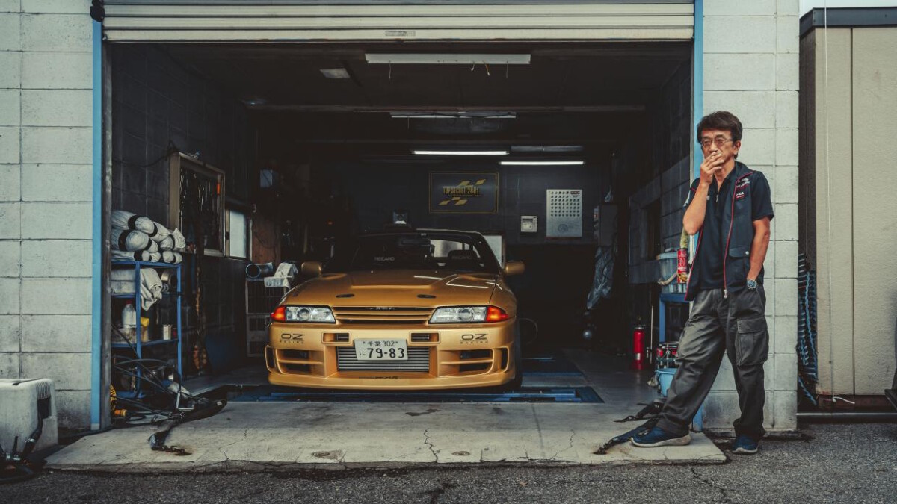
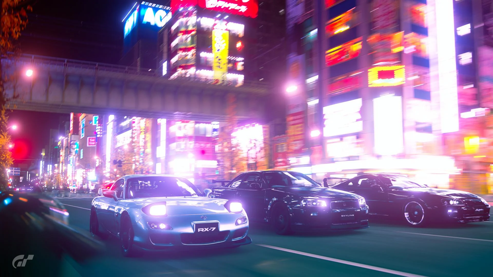

the legendary smoky nagata
today we talk aboute smoky nagata
Around 4am on November 4, 1998, Kazuhiko ‘Smokey’ Nagata pulled off the hard shoulder into lane two of the A1(M) and came to a stop. With rain falling and the mercury hovering just above freezing, he pinned the throttle, dropped the clutch and performed a monstrous burnout in the middle of the road. Satisfied the Midlands were suitably sluiced in tire smoke, he gunned his heavily modified, 1,003bhp, Japanese-registered, gold-painted Toyota Mk.4 Supra with one aim in mind: hitting 200mph

3 best jdm cars
today we talk aboute jdm cars
The RX nomenclature plays a massively important role in Mazda’s past – historically, anything bearing the name has also had a rotary engine, but the RX-7 always had just that little bit more panache than its related RX family. The RX-7 is arguably most recognised by UK car buyers in FD form, the third and final generation that was built over the course of 10 years, between 1992 and 2002.
The highly-anticipated Mk4 Supra was unveiled at the Chicago Motor Show in 1993 and it was a bold new direction for the company. It was in development for four years under the guidance of chief engineer Isao Tsuzuki, who also worked on the MR2 and the first Celica.